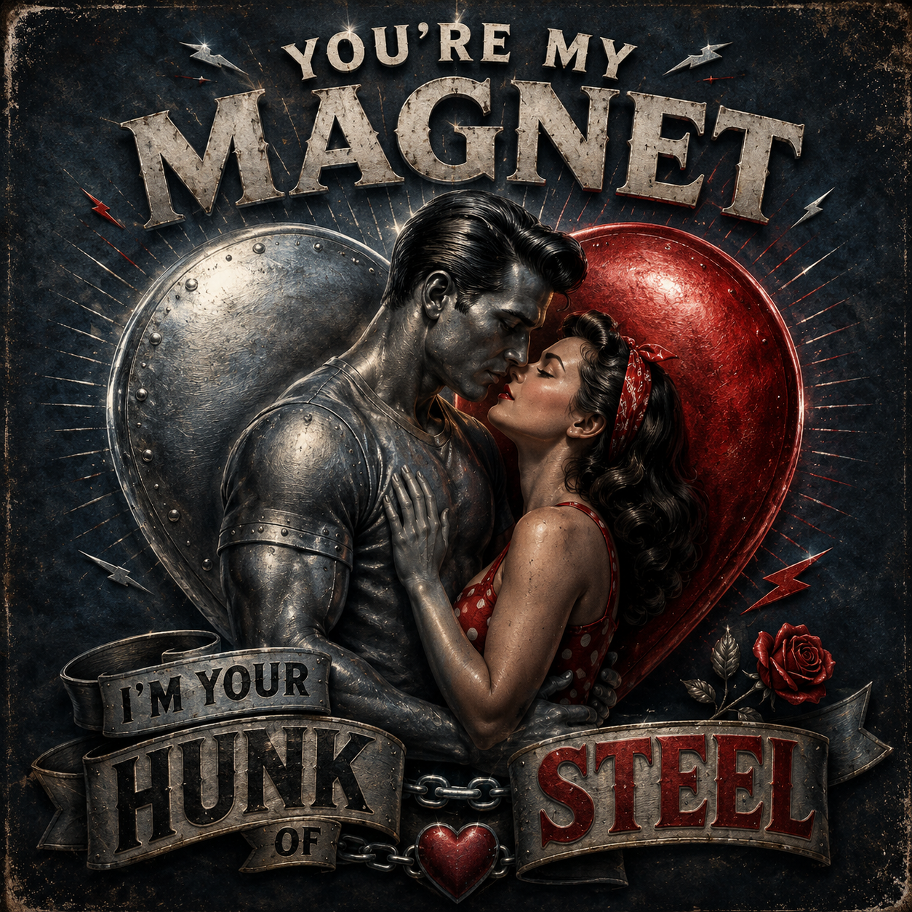
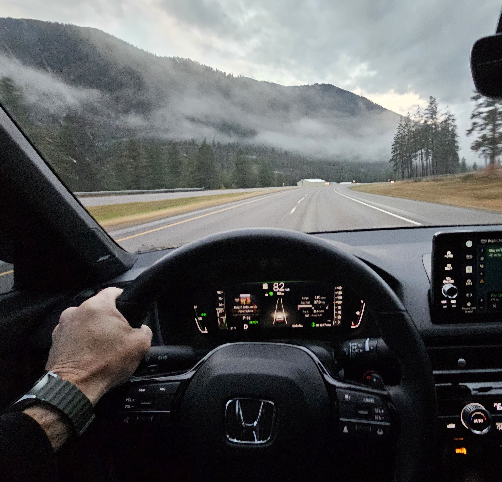
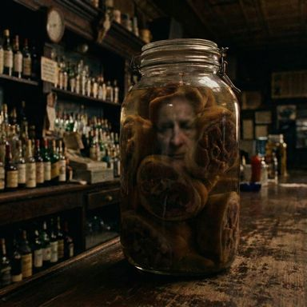
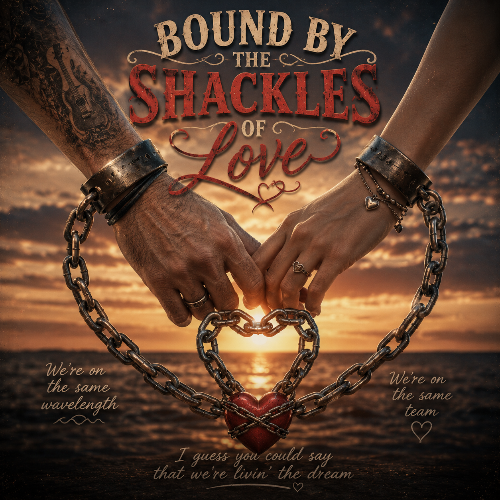
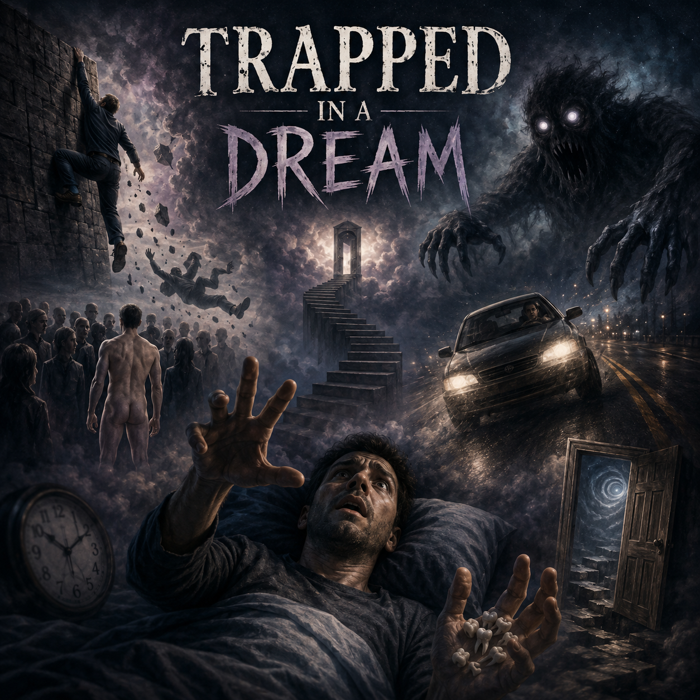
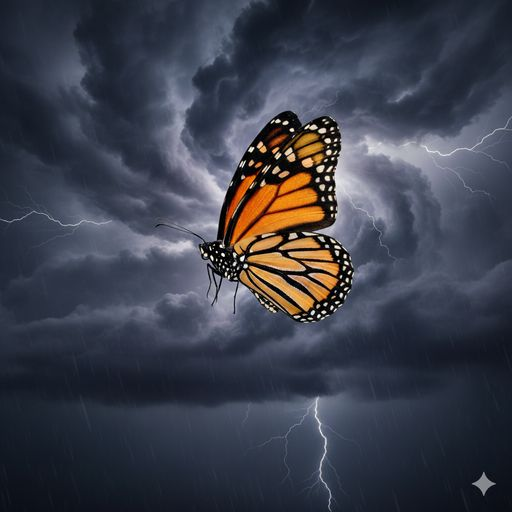
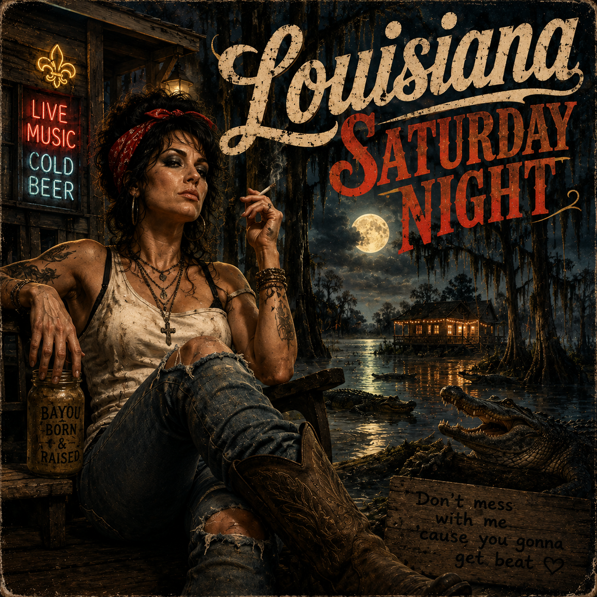
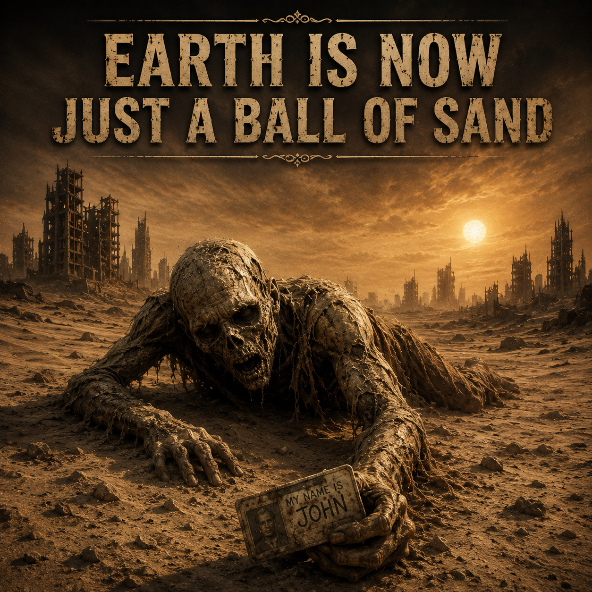

The Musical Process
These songs are driven entirely by narrative intent. The process involves drafting original lyrics - first and foremost - and iteratively prompt-tuning the AI to capture a specific emotional landscape.
Lyric Composition
Hand-crafted lyrics focusing on personal history, philosophy, and the people who inspire me.
Mureka (Originals) • Suno (Remixing)
Used to synthesize instrumentation and vocals by defining vocals, genre, mood, and rhythmic arrangements.
Beaverton Angel
My first song. Written for Elaine, who lived in Beaverton, Oregon as a child.
Verse 1:
This stretch of highway
printed on the Wyoming plain
Is drier than an old man's arm
Yeah, and I've been in love
But the harvests never paid off
In the soul of this man's farm
Chorus:
Through a cloud break
Comes a guiding light
Leading straight to you
And feeling oh so right
Beaverton Angel
How could I repay
My Beaverton Angel
You save my life each day
Verse 2:
Now on this journey
I won't be alone
Not with you by my side
The love I'd only dreamed of
And never thought I'd find
Is ours for the rest of this ride
Chorus:
Through a cloud break
Comes a guiding light
Leading straight to you
And feeling oh so right
Beaverton Angel
How could I repay
My Beaverton Angel
You save my life each day
Verse 3:
With more road behind me
Than what I’ve left to go
I’m at peace with the path I chose
I have the one thing
The last face I want to see
When this life’s curtains finally close
Chorus:
Through a cloud break
Comes a guiding light
Leading straight to you
And feeling oh so right
Beaverton Angel
How could I repay
My Beaverton Angel
You save my life each day

Hunk of Steel
Blues Version
Another song for Elaine. Originally written with a Blues tune in mind. This remixed version really sounds great.
[Verse]
Hey now baby, I need you to know.
Unless you ask me to, I won’t go.
Oh baby
I promised you for real.
'Cause you’re my magnet,
I’m your hunk of steel.
[Verse]
I’m tellin’ you woman, I hope you can see.
You don’t ever have to worry ‘bout me.
Oh, baby
You know the way I feel.
You’re my magnet, honey.
I’m your hunk of steel.
[Verse]
I told you baby, sick or well
The day they rang that wedding bell.
Oh baby
With you I made a deal
You’re my magnet
I’m your hunk of steel.
[lead solo]
[Verse]
Some say metals are bound to rust.
But I’ll never, ever break your trust
No baby.
This paint will never peel
You’re my magnet,
I’m your hunk of steel
[Verse]
If I don't go to heaven, If I wind up below
I swear I'll love you 'till the cold winds blow
My baby
Cupid's wound will never heal
You’re my magnet,
I’m your hunk of steel

Open Road
I wrote this for myself. Being a "Boomer", I grew up with cars. I love to drive and I love nature, away from people. For the Remix, I used the original to capture the melody.
[Verse]
For those with social leanings
the night life hustle calls
But I can't take the city
with all those concrete walls
Not that I don't like people
and yet, I think it is
I guess there's no right answer
this ain't no college quiz
[Chorus]
I can only open up
when on the open road
Leaving all my cares behind
before my head explodes
If there's a destination
Then I might drive straight through
But I won't miss the exit
that leads me home to you
[Verse]
My windshield is a cinema
my mind is free to drift
Each milepost behind me
I feel my spirits lift
When driving with my loved one
my hand upon her knee
In silence or conversation
this is the best of me
[Chorus]
I can only open up
when on the open road
Leaving all my cares behind
before my head explodes
If there's a destination
Then I might drive straight through
But I won't miss the exit
that leads me home to you
[bridge]
[Verse]
Those old cowpokes regale us
with stories of the West
Of fenceless open prairies
and burdens off their chests
I might not have a saddle
I might not have a horse
But winding roads and canyons
guide me to my source
[Chorus]
I can only open up
when on the open road
Leaving all my cares behind
before my head explodes
If there's a destination
Then I might drive straight through
But I won't miss the exit
that leads me home to you

Outside In
This is mostly reminiscent of my many heartbreaks in my previous life. Again, I used the original to keep the melody and the emotion.
[Verse]
I punch the snooze
Crawl out of bed
Drive through this city
With the working dead
I find my desk
Your photo's there
There's nothing for me
In this cold white glare
[Chorus]
I'm doin' okay on the outside
But I'm fallin' apart
from the outside in
Not really sure where I am goin'
But I wanna go back
to where I've been
[Verse]
So it's happy hour
I'm holding a beer
Of all these people
I wish you were here
I count the bottles
Behind the bar
I catch my reflection
In the ham hock jar
[Chorus]
I'm doin' okay on the outside
But I'm fallin' apart
from the outside in
Not really sure where I am goin'
But I wanna go back
to where I've been
[Verse]
I go to parties
Don't wanna go
Go through the motions
Put on a show
I do my dishes
I make my bed
I can't get your face
out of my head
[Chorus]
I'm doin' okay on the outside
But I'm fallin' apart
from the outside in
Not really sure where I am goin'
But I wanna go back
to where I've been

Shackles of Love
I heard this clearly in my head as an old gospel tune. The remix really rocks the house!
[Verse]
I said now baby
I'll be gone for a while
you know that I'll miss you
When I've gone half a mile
She said to me "baby"
you know I'll be here
whether you're absent
a day or a year
[Chorus]
We're on the same wavelength
We're on the same team
I guess you could say
that we're livin' the dream
'Cause we are...
bound by...
bound by...
the shackles of love
Yes, we are
bound by...
bound by...
the shackles of love
[Verse]
She's got some girlfriends
Who were off to the coast
I told her, "get goin'
I love you the most"
They'll get to have you
For a couple of days
But we'll be together
Forever. Always.
[Chorus]
We're on the same wavelength
We're on the same team
I guess you could say
that we're livin' the dream
'Cause we are...
bound by...
bound by...
the shackles of love
Yes, we are
bound by...
bound by...
the shackles of love
[bridge]
[Verse]
The forces that bind us
Are stronger than steel
The strength is increased
By the love that we feel
We love each other
and we love freedom too
By love we are bound
Through love we are true
[Chorus]
We're on the same wavelength
We're on the same team
I guess you could say
that we're livin' the dream
'Cause we are...
bound by...
bound by...
the shackles of love
Yes, we are
bound by...
bound by...
the shackles of love

Trapped in a Dream
Big Band Version V.1
I liked the original Big Band version since that is what I was looking to create. The Remix really captures a Harry Connick Jr. vibe.
[Verse]
Something is strange here,
I don't understand.
All of my teeth,
In a pile, In my hand
I lose my grip,
While climbing a wall.
I'm frozen in terror,
As I wake from a fall.
[Chorus]
How is this happening?
I'm losing my grip.
Was I poisoned at dinner?
Is this a bad trip?
Some sort of evil.
Some nefarious scheme.
Someone please help me.
I'm trapped in a dream!
[Verse]
Crowds all around me,
Oh, how can this be?
I stand without clothing,
all eyes are on me.
Who is this driving?
Why did they swerve?
They're losing control,
I'm losing my nerve.
[Chorus]
How is this happening?
I'm losing my grip.
Was I poisoned at dinner?
Is this a bad trip?
Some sort of evil.
Some nefarious scheme.
Someone please help me.
I'm trapped in a dream!
[Bridge]
In some dreams I'm laughing.
In some dreams I scream.
Each night brings a movie.
The magic of dreams.
Can I change this outcome?
The way this dream ends.
The unsettling answer comes...
"Well, that depends".
[Verse]
Stairways to nowhere.
I run with lead feet.
The creature behind me,
it's large, and it's Fleet.
What's going on now?
I've been here before.
If I walk through this doorway.
I'll fall through the floor.
[Chorus]
How is this happening?
I'm losing my grip.
Was I poisoned at dinner?
Is this a bad trip?
Some sort of evil.
Some nefarious scheme.
Someone please help me.
I'm trapped in a dream!

Survival
Great lyrics and another ode to Elaine, "My shining pulsar". The original version ended oddly and prematurely. I used the original for the melody and emotion. The Remix result is very good.
[verse]
The Phoenix of the forest
Conifers need flame
The mother tree consumed
Only ashes remain
But rising from the ashes
An emerald sprout breaks through
It reaches for the heavens
As I reach out to you
[chorus]
You are my shining pulsar
Though not a distant star
A light of such intensity
For me, that's what you are
I'm driven toward survival
My fears, they melt away
Knowing you're beside me
I head into the fray.
[verse]
The will of life force surges
The chick attacks the shell
It breaks into the sunlight
To what, it cannot tell
But instinct draws it outward
A fragile, awkward wretch
It grows to soar the heavens
With glowing, trailing fletch
[chorus]
You are my shining pulsar
Though not a distant star
A light of such intensity
For me, that's what you are
I'm driven toward survival
My fears, they melt away
Knowing you're beside me
I head into the fray.
[Bridge]
As naked, helpless creatures
We stumble through our lives
With hopeful perseverance
Life's force within us thrives.
[verse]
A monarch starts its journey
Within a silken tomb
Once it breaks its confines
its graceful wings will bloom
It won't survive its journey
a continent away
And yet it battles gravity
to live another day
[chorus]
You are my shining pulsar
Though not a distant star
A light of such intensity
For me, that's what you are
I'm driven toward survival
My fears, they melt away
Knowing you're beside me
I head into the fray.
And Everything is Gone
Humanity is finally freed, from this awful mess. Inspired by "The Fourth Turning".
[verse]
Lying deep in ambush on a Serengeti plain.
Wearing sweat soaked pelts of leather and of mane.
Their stone tipped spears beside them,
As they watch their foes advance.
The battle leaves one standing,
In a soon repeated dance.
[chorus]
Wherever groups assemble,
An irresistible need,
Leads us to be violent.
The consequence of greed.
Can we not remember?
Can we not recall?
This sequence in our genome,
Will bring about our fall.
[verse]
Whatever they can carry, pitch fork, club or sword.
They charge into the carnage of bodies stomped and gored.
Though hatred is the fuel,
Its purpose is arcane.
Survivors will in earnest,
Go on to fight again.
[chorus]
Wherever groups assemble,
An irresistible need,
Leads us to be violent.
The consequence of greed.
Can we not remember?
Can we not recall?
This sequence in our genome,
Will bring about our fall.
[verse]
Their muskets packed and ready, the bugle makes the call.
They race into a wall of smoke, where most of them will fall.
By the generals it is touted,
as strategy and means.
So the pattern is repeated,
while red blood soaks the greens.
[break]
[bridge]
We're told we are the apex,
Of consciousness and thought.
We escalate our methods,
From battles we have fought.
We're destined for extinction,
Yet our leaders spur us on.
To mushroom clouds and fire,
And everything is gone.
[verse]
Sitting in a bunker a mile underground.
A screen alerts the viewer to something it has found.
A button red and blinking,
a shaking hand will press.
Humanity is finally freed,
from this awful mess.
[chorus]
Wherever groups assemble,
An irresistible need,
Leads us to be violent.
The consequence of greed.
Can we not remember?
Can we not recall?
This sequence in our genome,
Will bring about our fall.
Minnehaha
A song about my childhood and the Minnehaha creek that cuts through Minneapolis. I used the original as a template again.
[verse]
When I was a Cub scout,
I was stranded on a ledge.
Too scared to move up or down.
I clung onto the edge.
Through the kindness of a young man,
who was with us on that day.
He plucked me from the precipice,
and scared the ghosts away.
[chorus]
Where the Minnehaha tumbles
A depiction made of brass
Shows Hiawatha carry her
To the safety of the grass
The Mississippi takes her in
And carries her along
From Minnesota to the Gulf
Where oceans sing her song
[verse]
Lying in a snowbank.
In a blizzard, in the dark.
Drinking Snowshoe Grog and grinning.
Acting on a lark.
Minnehaha's tears were frozen,
And we crawled around behind.
Slipping on the forming ice,
To see what we might find.
[bridge]
Fifty years of memories
From bugs and rain and snow
I was sculpted by an artists hand
To be the man you know
[verse]
I've walked along her sandy base,
Crayfish in reverse.
From Minnetonka where she's born,
I've paddled and immersed.
To a growing boy she offered up,
an urban life escape.
And as a man my preference lies,
In Nature's vast landscape.
[chorus]
Where the Minnehaha tumbles
A depiction made of brass
Shows Hiawatha carry her
To the safety of the grass
The Mississippi takes her in
And carries her along
From Minnesota to the Gulf
Where oceans sing her song

Louisiana Saturday Night
I heard some country music and I started thinking of silly lyrics. This ended up being kind of a neat song.
[Verse]
My name is Nancy, with a silent “N”
If you don’t understand me, then I’ll say it again
Or I can write it down, with a fountain pen
On a Louisiana Saturday Night
[Chorus]
Raised up on the bayou
Where the cypress grow
The gators, they sunnin’
Tails to and fro
I learned survival
In the swamp and heat
Don’t mess with me
‘Cause you gonna get beat
[Verse]
I could’a had a good life, but I don’t know when
I was an orphan, at the age of ten
I lost my virtue, to a guy named Ben
On a Louisiana Saturday Night
[Chorus]
Raised up on the bayou
Where the cypress grow
The gators, they sunnin’
Tails to and fro
I learned survival
In the swamp and heat
Don’t mess with me
‘Cause you gonna get beat
[Verse]
I go to church, and I say, “Amen”
If you don’t like it, then you ain’t my fren
I ain’t too restless, and I ain’t quite Zen
On a Louisiana Saturday Night
[Chorus]
Raised up on the bayou
Where the cypress grow
The gators, they sunnin’
Tails to and fro
I learned survival
In the swamp and heat
Don’t mess with me
‘Cause you gonna get beat
I said,
Don’t mess with me
‘Cause you gonna get beat

The Creature
A bleak song about a possible future. I wrote this at breakfast. I tried it as Techno and then made it dark, and boy, that did the trick.
[Verse]
The creature makes its way along the sterile bleak landscape
Its shuffling feet kick up dust, its crusted mouth agape
What happened here it can't recall and even if it could
The past is gone, to wish it back would simply do no good
[Chorus]
Did they ever think about the power they possessed?
Bravado and control issues no matter how they dressed.
They pushed each other to the brink just to make a stand.
The results are clear the Earth is now just a ball of sand.
[Verse]
The creature doesn't have a mate it likely dies alone
There is no food or water here to nourish skin and bone
And still it searches night and day to find food or drink
But in this state of malnutrition it can barely think
[Chorus]
Did they ever think about the power they possessed?
Bravado and control issues no matter how they dressed.
They pushed each other to the brink just to make a stand.
The results are clear the Earth is now just a ball of sand.
[Bridge]
What will the end be like
And will the end be fast?
Is our fate to only learn
As we breathe our last?
[Verse]
And now the creature stops to rest its body starts to fail
It doesn't know just where it is because it lost the trail
It tightly grasps a plastic card a face is printed on
And as it takes its final breath it says, "My name is John!"
[Chorus]
Did they ever think about the power they possessed?
Bravado and control issues no matter how they dressed.
They pushed each other to the brink just to make a stand.
The results are clear the Earth is now just a ball of sand.